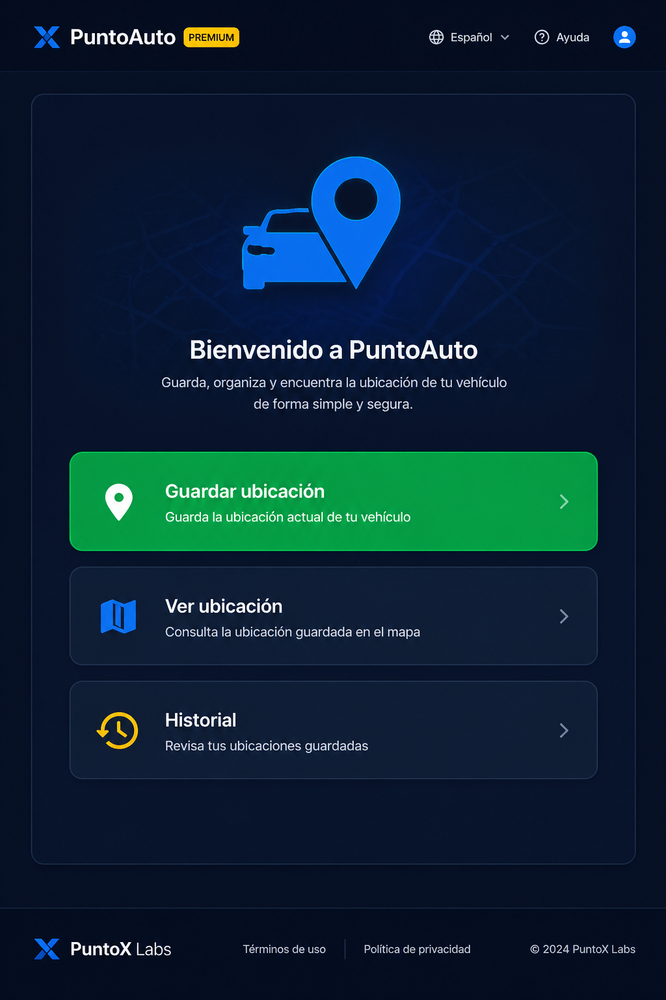
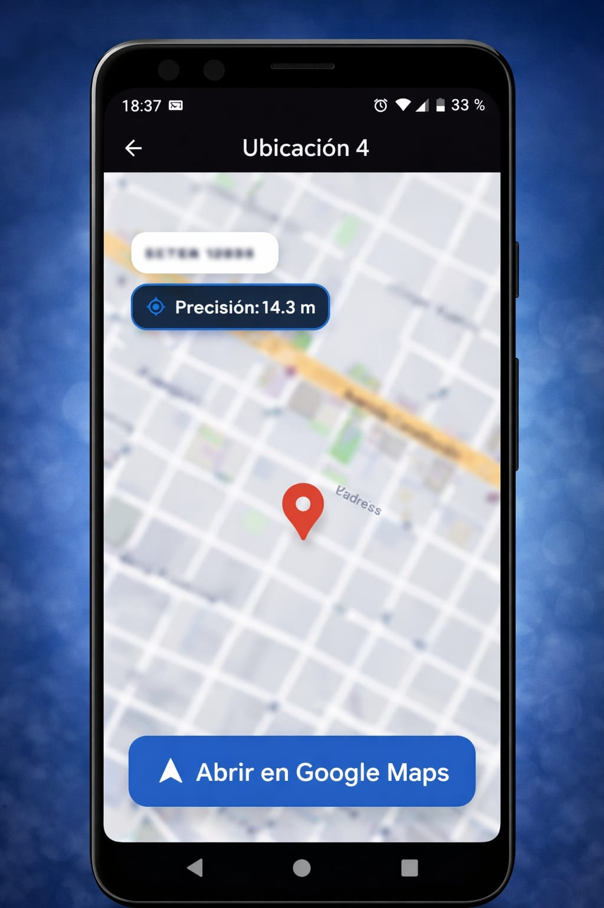
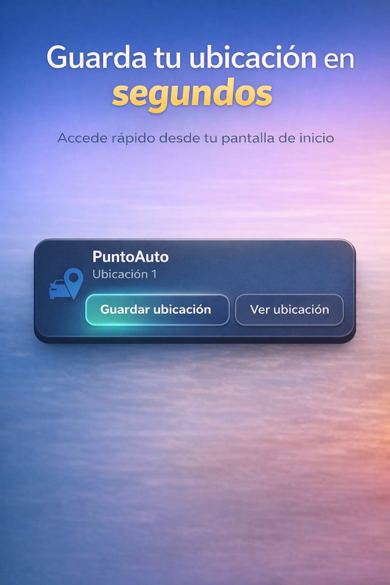
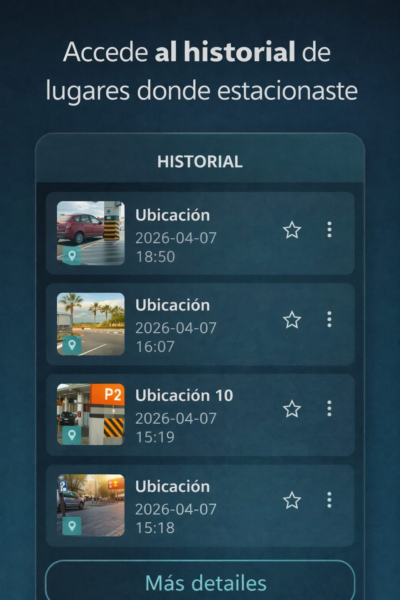

📍
Guardá el punto
Registrá dónde dejaste el auto en segundos, con señales claras de precisión.
Abrís, tocás “Guardar” y listo. Cuando volvés, el mapa te lleva directo al lugar. Sin registro, sin pasos extra.

El foco está en resolver una situación concreta: estacionaste, guardás la ubicación y después volvés con ayuda del mapa.
Registrá dónde dejaste el auto en segundos, con señales claras de precisión.
Abrí la ubicación en el mapa y verás el lugar donde estacionaste.
Interfaz clara, directa y preparada para uso cotidiano.
Guardás dónde estacionaste y volvés sin pensar. Una app directa para resolver una situación cotidiana en segundos, sin pasos extra ni distracciones.
Pantallas reales de la app para entender rápido cómo funciona: guardar la ubicación, volver al auto y revisar el historial.



PuntoX Labs nace como laboratorio de aplicaciones prácticas: productos pequeños, claros y útiles, con potencial de crecer en el tiempo.
El objetivo no es hacer tecnología compleja porque sí, sino resolver necesidades simples de manera clara.
Cada app puede comenzar chica, validar uso real y sumar funciones según la respuesta de los usuarios.
Funciona en segundos, sin configuraciones ni pasos innecesarios.
Descargar gratis